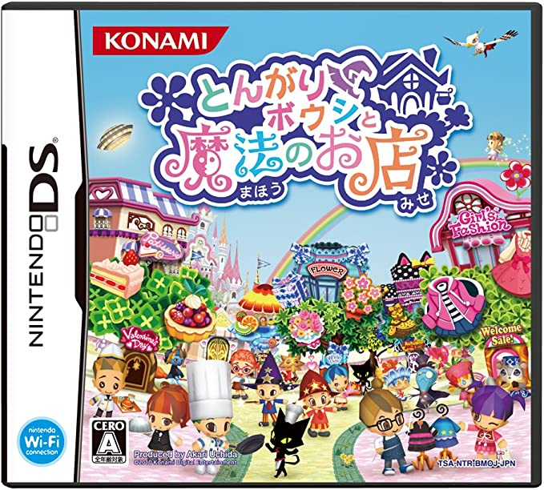
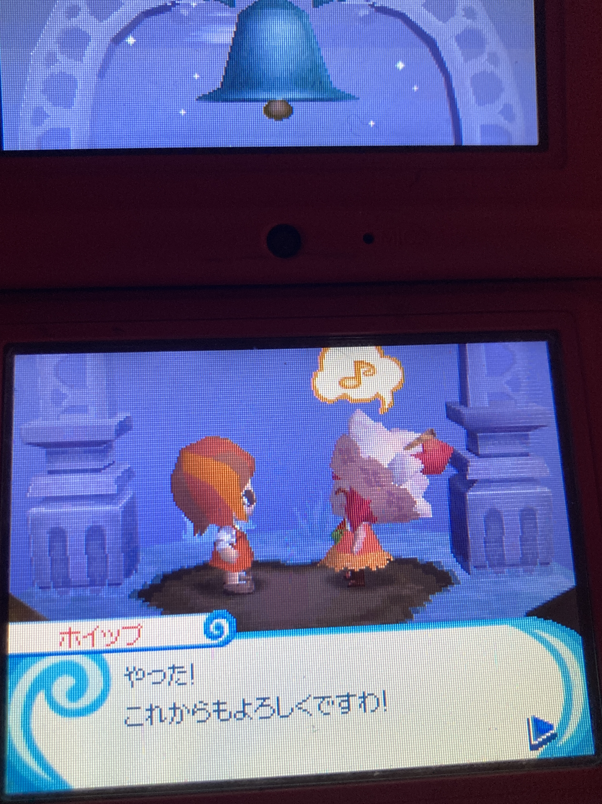

年の瀬に見た原点
全人類が今年の振り返り日記を書いているので、自分も便乗する……なんてことはなくて。
帰省中たまたま立ち寄った中古ゲームショップで、懐かしいゲームを買った。

ガチの音ゲーきっかけを遡ると
— ₍₍⁽⁽🍳₎₎⁾⁾ (@sal_pipr) December 1, 2022
2016
- Deemo ← 外向きに言う初の音ゲー
2014~2015
- シアトリズムドラクエ
- プロジェクトミライ2
- リズム怪盗R
2012
- とんがりボウシと魔法のお店の「うたう」 ← 記憶あるうち一番古い音ゲーっぽいやつ（これ伝わる人おらん）
とんがりボウシと魔法のお店。🍳の真に初めてやりこんだ音ゲーは実はこれとされている。
いや、厳密には同じシリーズの「おしゃれな魔法使い」をやっていたわけなんだが、内容としては前作の「お店」の方が一番バランスよく遊びやすい1。久しぶりに「うたう」ミニゲームを拝みたくなって、買い直したというわけ。
なんですけど。
激なつかしゲームで労働する年末 pic.twitter.com/lPTmTUCiu3
— ₍₍⁽⁽🍳₎₎⁾⁾ (@sal_pipr) December 29, 2022
いや〜〜〜楽しいねこれ。
せっかくの帰省がいまのところすべてこのゲームで消し飛んでいる。そういえば正月明けすぐ締切の課題があったような気もするが知らん。2022年の締括っぽいこと一切できてないけど知らん。ケーキ作りたのし〜〜〜！！！
魔法学校に転校してきた主人公が、魔法の勉強をしつつ、クラスメイトと交流しつつ、ふしぎな生き物たちが起こす事件を解決しつつ……という一作目「とんがりボウシと魔法の365日」に、好きなお店を経営するという要素が新たに追加されたのがこのゲーム。学生のお遊びとはいえ一店舗の経営なんて任されたら肝心の学業が疎かになってしまうのではと思いきや、授業があまりにもゆる単すぎてなんとかなるので成立している。
昔は服屋やらアクセサリ屋やらをやっていた気がするが、今回はお菓子屋に注力してみることにした。お菓子の生地を混ぜたりフルーツを盛り付けたりといったミニゲームをこなし、できた商品を店頭に並べていく。自作の商品をクラスメイトにオススメして街の流行を作ったり、お客さんの質問に答えて接客の評判を上げたり、一度やり込もうとすると無限に時間が溶ける代物。
このミニゲームがさ、か〜わいいんだわ。

(DSなので直撮り失礼2。)
見てこのぷにぷに生地。か〜わいい。無限に遊べるんだけどなにこれ。
そもそもこのゲーム、キャラデザがかわいいんよな。ポップでちょっとミステリアスな雰囲気、カラフルだけど派手すぎないカラーリング。直撮り写真まみれになってしまうから布教は控えるけれども、クラスメイトから街の風景まで統一された「ミステリアスなカラフルさ」が、魔法のある世界の楽しさ（とたまに不気味さ）を上手く体現していてすごい。

一枚だけ。これは、お気に入りの子と親友になった名シーン。
そういえば、かつて自分のお絵かき趣味はこのゲームから始まったことを思い出した。この愛らしい二頭身とハイライトのない（でもかわいい）顔に憧れて、このゲームのパッケージ絵を模写し始めたんだっけ。このせいで、長い間描ける等身を上げられなくて散々困ったりしたなあ。今ですら気を抜いたらすぐデフォルメイラストに走ってしまうのは、それが他でもない生家だからなんだろう。
そうそう、肝心の「うたう」だけど、直撮り必須だからかプレイ動画が見つからなかったので、これが本邦初公開かもしれない。

なんてことはない、スライドしてノーツを拾っていくタイプのゲーム。それっぽいアイドルソングが揃っていて出来がいいので、気になる人はぜひ中古で買ってやってみてほしい。音ゲーがメインのゲームじゃないけどね。
実家への帰省以上に、懐かしさに浸りながら新年を迎えることになった。時間の許す限り、遊びきれるといいね。